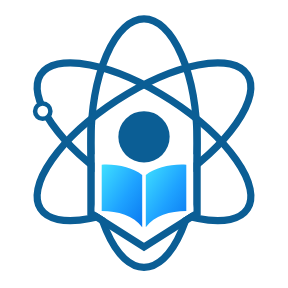

Mathnexus · Terminale S2
Parcours interactifs de mathématiques et de sciences physiques · programme sénégalais
Des parcours pas à pas pour réviser seul : explications, graphiques à manipuler, exercices corrigés sur le modèle du bac, et une évaluation chronométrée notée sur 20 à la fin de chaque partie. Ta progression est gardée sur ton appareil.
Mathématiques
Partie 1 disponible
Étude de fonction
Fonctions polynômes, rationnelles, irrationnelles et trigonométriques, de l'ensemble de définition jusqu'à la réciproque.
- Domaine de définition, limites, asymptotes, branches infinies
- À venir : continuité, dérivabilité, variations, tracé, bijection réciproque
Parties 1 et 2 disponibles
Nombres complexes
Tout le chapitre, des calculs aux exercices de géométrie et de suites, avec des sujets du bac S2.
- Forme algébrique, plan complexe, équations de degré 2 et 3
- À venir : module et argument, racines n-ièmes, géométrie, suites
Sciences physiques
Les vidéos des méthodes clés et d'autres chapitres arriveront au fil de l'année.